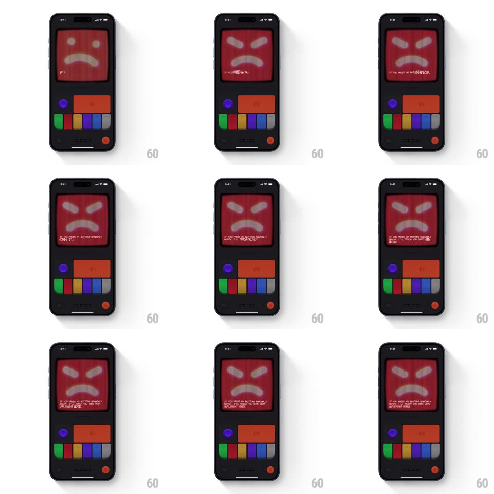

Media
Frame-by-frame

Rebuild this interaction 1:1: Mist's angry mode - tapping buttons on the retro toy console flips the CRT screen from the green happy face to a red angry face (glaring X-brows, frown) with a screen-shake glitch, while angry text types itself out across the bottom of the screen character by character.

Rebuild this interaction 1:1: Mist's angry mode - tapping buttons on the retro toy console flips the CRT screen from the green happy face to a red angry face (glaring X-brows, frown) with a screen-shake glitch, while angry text types itself out across the bottom of the screen character by character. ## Integration Integration: stack-agnostic spec - springs given as stiffness/damping, timed motions as duration + curve; map every value to your framework and animation library of choice. ## Scene A retro handheld console UI: chunky dark body, a CRT screen with visible scanlines showing a big pixel face (green smile at rest, red scowl when angry), and below it a control cluster - round blue button, wide red button, a row of colored pill keys, red power dot. ## Motion spec Pattern: state flip with glitch + typewriter. - Tap: the screen glitches - the whole CRT image shakes (translateX/Y jitter +/-6px, 3 frames, ~120ms) with an RGB-split flash, then snaps to the angry red face. - The face swap itself is instant (one frame) - the violence is in the shake, not a transition. - Angry copy types out below the face character by character (30-40ms per char, monospace, cursor block blinking at the head) - e.g. "IF YOU PRESS MY BUTTONS RANDOMLY AGAIN, I'LL TEACH YOU SOME VERY UNPLEASANT WORDS". - The face seethes while angry: subtle CRT flicker (luminance jitter 2%, 100ms) and the brows pulse once on landing. - Tapping again during typing restarts the shake and the next line. ## Calibration - Scanlines and a slight barrel-distortion vignette are always on - it is a CRT, not a flat panel. - The typing is fast but readable - anger, not a printer. ## Reduced motion Face swaps without shake; text appears whole. ## Don't miss - The face is built from chunky pixel shapes - visible big pixels, no anti-aliasing. - The shake desynchronizes the scanline texture from the face for one frame - the glitch detail that sells it.